该版本是 node.js 的 Version 13，通过 VS Code 一步一步调试，大致了解了 node 的启动流程，同时也对 C++ 的语法和使用有了一些了解
从入口开始

在 node_main.cc 文件中，这一行就是本次旅程的起点，node::start 启动并将 argc ( node 接收到的参数总数)和 argv (参数地址)传入。
InitializeOncePerProcess
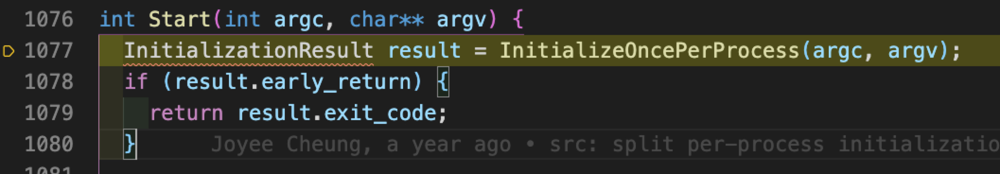
在 node.cc文件中，这行是开始初始化进程，从名字可以看出，这里保证只执行一次
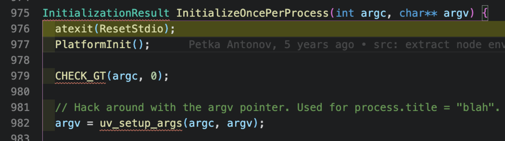
atexit 函数，从命名可以知道这个是在程序即将结束时会被触发，resetStdio 函数用来对标准 I/O 资源的回收，包括文件描述符 fd 和 tty 相关的。

PlatformInit
PlatformInit 函数，主要是对不同平台进行兼容并做一些平台相关的初始化工作，例如这里就是对文件描述符 fd 的初始化，确保进程中 fd 0(stdin)、1(stdout)、2(stderr) 是正常的， fstat 会返回文件的相关信息，535 行的作用是保证 fd 为 0 1 2 的值都已经被占用，fd 分配从 3 开始，fd 表示的是进程能打开的文件数，系统默认是 1024

定义并初始化 act 变量，根据系统的 signal 值，对不同的 signal 注册触发函数
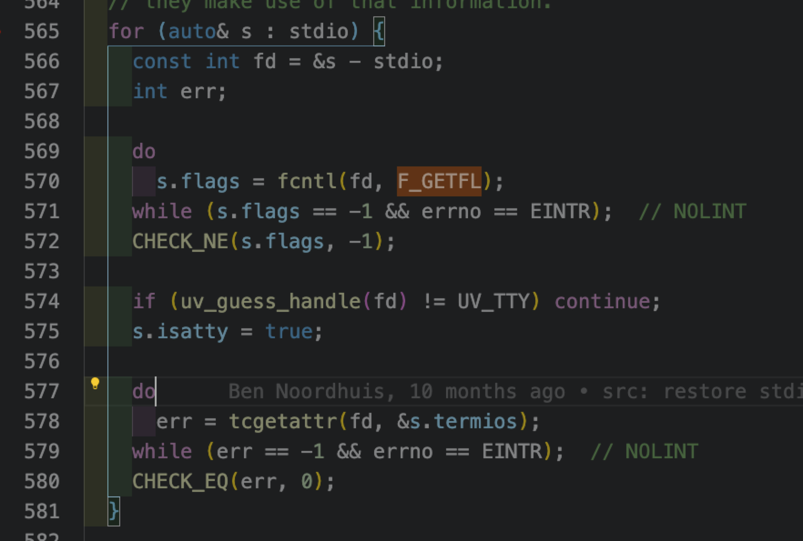
通过 fcntl 函数读取文件的文件描述符标记，fcntl 的文件状态标志总共有 7 个：O_RDONLY , O_WRONLY , O_RDWR , O_APPEND , O_NONBLOCK , O_SYNC 和 O_ASYNC
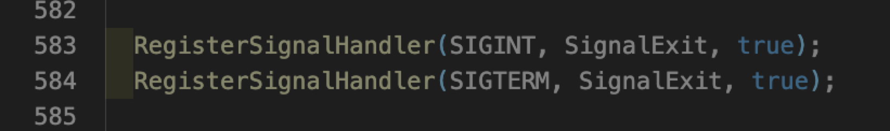
RegisterSignalHandler 注册系统信号的触发函数，上面的是进程结束时的信号，SIGINT 当我们敲 c t r l + c 时会发出，SIGTERM 该信号可以被阻塞，等待合适时机再进行退出处理，而 SIGKILL 信号则是不能被捕获的，一旦发出则程序一定会退出，例如 kill -9 命令就会发出该信号
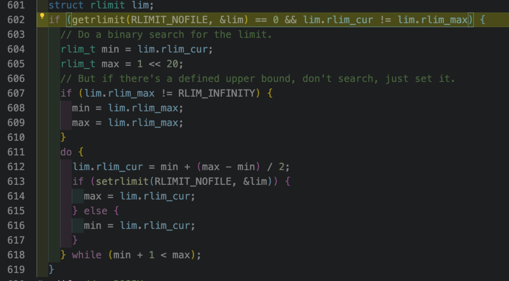
getrlimit 是用来获取系统限定资源信息的函数， RLIMIT_NOFILE 的意思就是获取最大的文件描述符数，分为软限制和硬限制，软限制的值不能大于硬限制，这里利用二分搜索找出系统能设置的最大值
uv_setup_args

uv_setup_args 的作用是复制一份命令行的参数，用于赋值给 process.title
InitializeNodeWithArgs

RegisterBuiltinModules

node_biding.cc

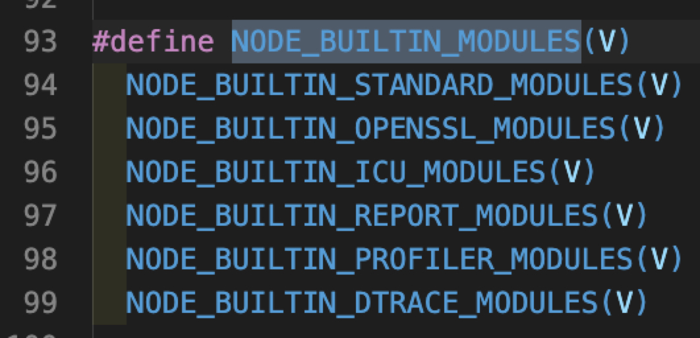

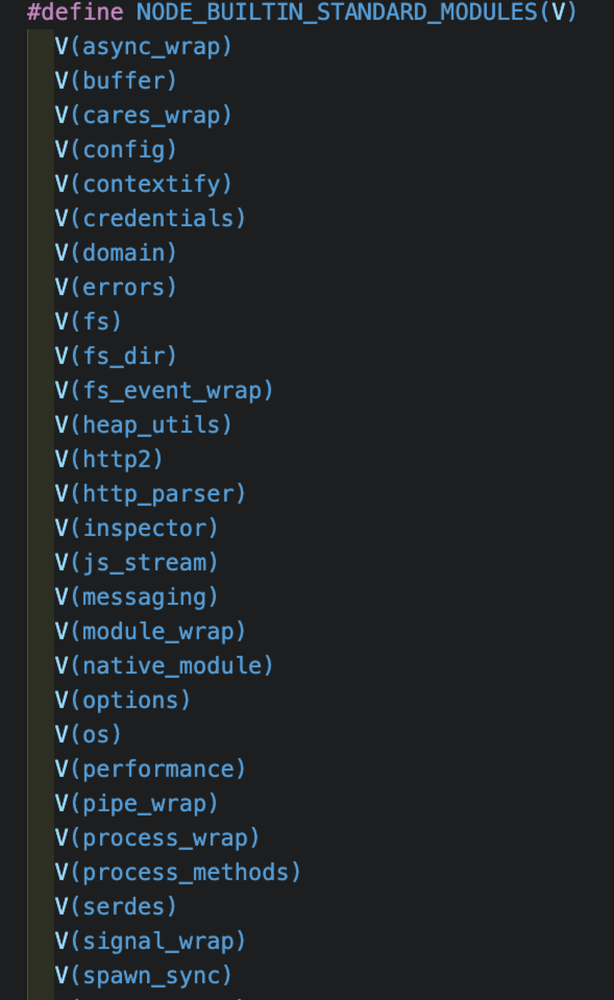
RegisterBuiltinModules 注册内置模块，使用了宏的写法，这些模块就是在 no de_XX.cc 中的模块，生成一个 modlist_internal 链表中借助 nm_link 指针指向下一个模块


接下来是一些 Node 环境变量的配置
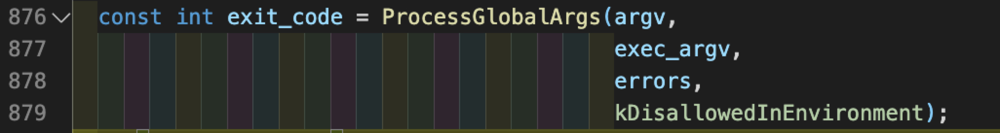
把命令行中的配置项，例如 – 或者 - 开头的从 argv 分离到 exec_argv 中
InitializeCodeCache
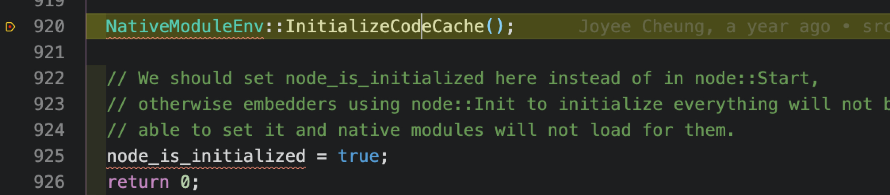
node_code_cache.cc

这一步把提前编译好的 lib 下的 js 文件都存放在 code_cache 的 map 中，免去了读入文件的过程，加快启动速度

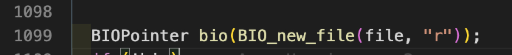
如果使用了 openssl 则使用 ca 证书，借助 BIO 进行读取
per_process::v8_platform.Initialize
node_v8_platform-inl.h

node_platform.cc
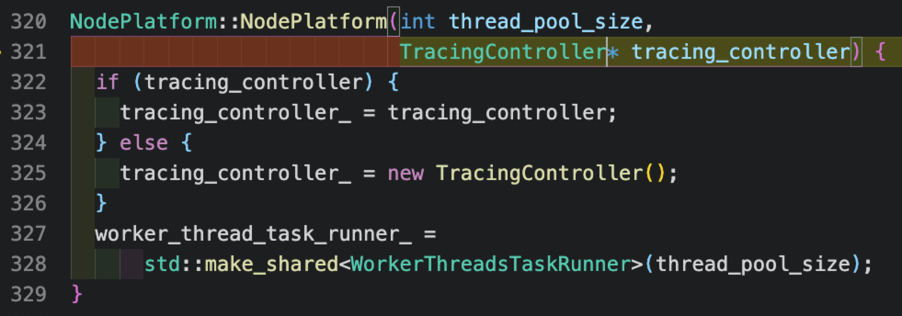
初始化 V8 平台相关的准备工作，包括添加运行状态追踪，生成 node 平台实例，配置多线程的线程池资源
v8::V8::InitializePlatform
api.cc
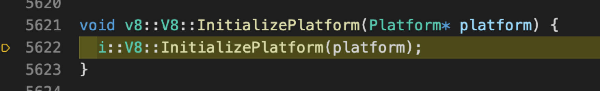
v8.cc
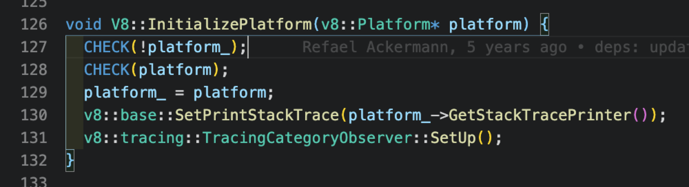
初始化 V8 平台，包括调用栈追踪和调用栈等功能的初始化
node 的代码中很多 v8::XX 和 v8::internal::XX 的转换，等于是在中间加多了一层，对外暴露的 API 是 v8::XX，而 v8::internal::XX 则是内部实现，这样可以将代码分离，内部的变更都不会影响外部 API
V8::Initialize
node.cc

v8::internal::V8::InitializeOncePerProcess
v8.cc
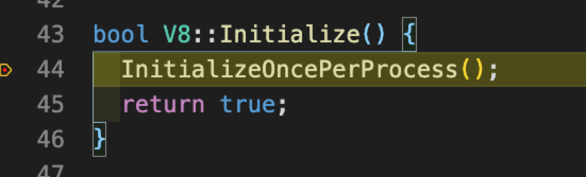


这里从命名就可以看出是只会执行一次的逻辑，类似的变量均被定义为 OnceType 类型，该类型的实质是 C++ 中的 std::atomic，该类型是用来多线程中避免竞争的原子操作原语，而 init_once 则是 OnceType 类型
load 和 store 是读写值时使用的函数， Memory Order 意思是内存顺序，是 CPU 对指令执行优化引申的一个概念，多线程的同步机制一般有 mutex 和 atomic，前者性能消耗大于后者。
once.cc
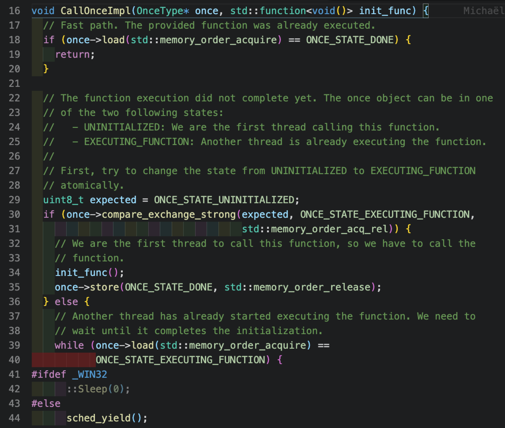
此处的 memory_order_acquire 对应的是 release-acquire 机制，保证了线程读写对其他线程的可见性，这里我们可以看到 callOnceImpl 的实现，如果 once 的状态为已完成则直接返回，否则初始化一个 expected 变量赋值为初始态，compare_exchange_strong 的作用就是做一次 CAS(compare and swap) 如果变量的值符合预期，即 初始态 ，那么就更新变量的状态为 执行中 ，执行 init_func 结束后，将变量状态设置为 结束态 ，如果 CAS 操作没有成功，且此时状态为 执行中 ，就调用sched_yield 交出执行权，这里的机制类似 JS 的 generator
V8::InitializeOncePerProcessImpl
v8.cc
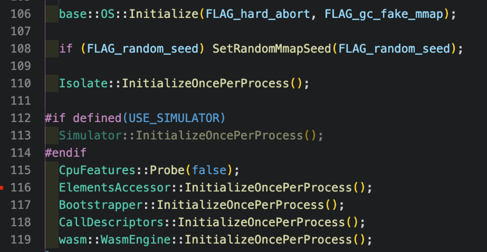
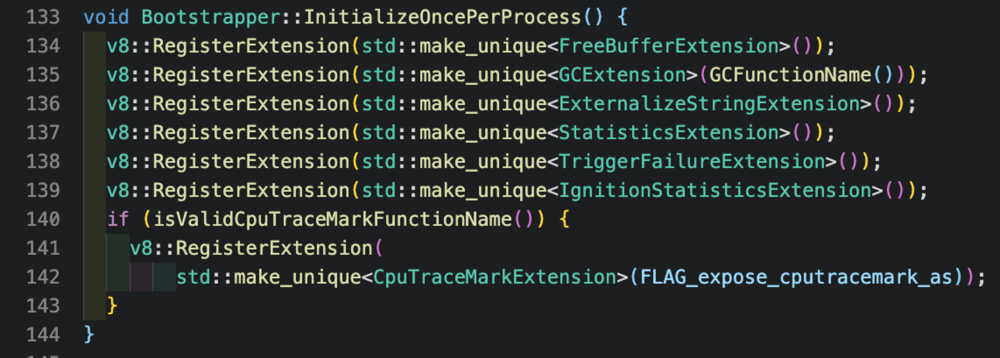
这里主要是做了各种初始化操作，包括 OS ，Isolate 的线程标识 ，还注册了一系列 v8 扩展
至此 node::Start 中的 InitializeOncePerProcess 完成
Node::Start
node.cc
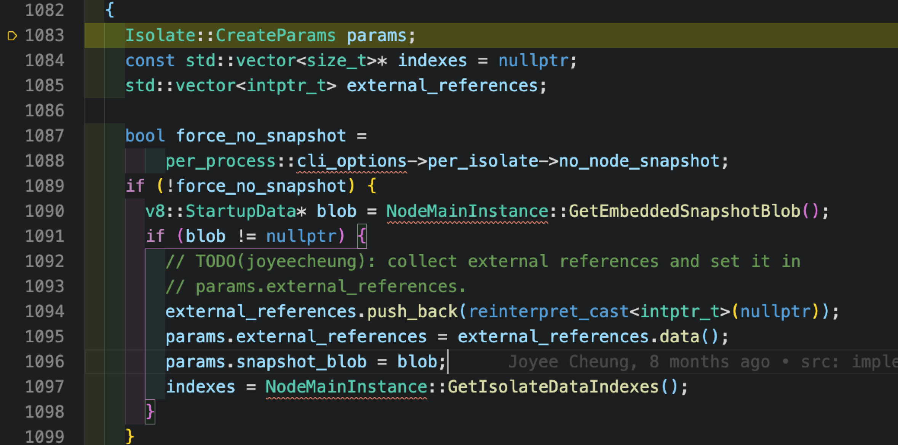
初始化 params 用于 Isolate 的初始化，然后获取 snapshot(快照) ，这是 Node 引入的加快启动速度的优化，将 Isolate 和 Context 的部分初始值序列化后嵌入程序中，然后后续的初始化可以复用他们之前的 snapshot
main_instance

生成 main_instance 实例，将 Isolate 的 params ，libuv ，先前生成的 v8_platform ，命令行参数 args ，带 – 或 - 的参数 exec_args 传入
node_main_instance.cc

isolate.cc


第 71 行 为 Isolate 初始化做前期工作，在第 2819 行初始化 Isolate 实例，isolatedata 保存了 Isolate 数据，isolateallocator 保存了 Isolate 的内存地址，接着初始化了线程管理器 ThreadManager ，最后初始化了微任务队列 MicrotaskQueue 这是一个双向循环链表
第 75 行在 platform 中注册 Isolate ，将该 Isolate 和 eventloop 的信息记录在 map 中，便于多 Isolate 条件下的查找
第 76 行根据 params 的值设置 node 的 heap 堆内存资源额度，包括新生代，老生代，semispace
第 77 行真正初始化 Isolate，根据 params 为 Isolate 赋值
api.cc

这里设置了堆栈的资源额度限制真正开始生效，第 8224 行从 snapshot 中获取部分数据赋值给 Isolate

isolate_scope 负责记录 isolate 被线程访问的情况，通过 EntryStackItem 记录
至此，Isolate 的初始化正式完成

保存一份 IsolateData 在 NodeMainInstance
NodeMainInstance::Run
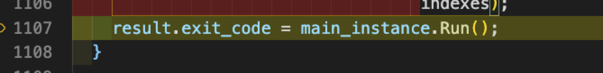
启动的前期工作准备就绪，这时候开始运行 main_instance

HandleSope 经常能在代码中看到，这等于是开拓了一片作用域，在这之后的Local 变量都会被纳入 V8 的内存管理，在代码运行结束后资源能够被 GC 回收，这是一个简化的操作，实现原理是通过生成实例时调用 enter 方法，然后再运行结束时 C++会自动调用析构函数，这时候调用 exit 方法，起到了自动管理的作用
NodeMainInstance::CreateMainEnvironment


这里根据 snapshot 初始化 context ，下面的 context_scope 作用同上，其中的context 会被注入到 JS 中作为全局的 global 对象

生成指向 Environment 的指针，这个时候会实例化 Environment，然后生成 node 中的 process 和 primordials 对象，准备注入到 Js 中
接下来开始初始化 libuv 和 诊断相关的逻辑

注册不同阶段的 handle
Environment::RunBootstrapping
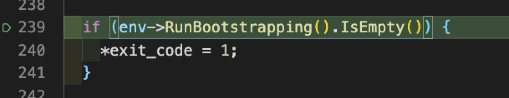

运行 JS 代码，lib/internal 中的 loaders 和 node
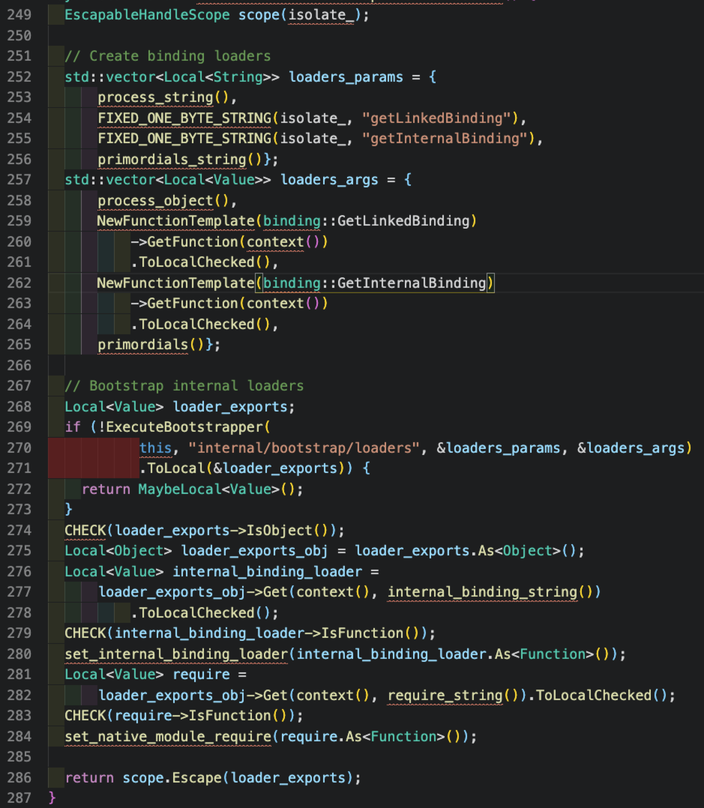
FIXED_ONE_BYTE_STRING 作用是将 string 转换为 Local
运行 internal/bootstrap/loaders 文件的逻辑，同时注入 process ，getLinkedBinding，getInternalBinding，primordials，这样在 Js 文件内部就可以访问到
loader_exports 返回的是 JS 文件中 return 的 loader_exports 对象，包括 require 方法， internalBinding 方法
EscapableHandleScope 的作用是用来要把内部的 Local 类型往外返回的时候，避免被 v8 回收


执行 ExecuteBootstrapper 中的 NativeModuleEnv::LookupAndCompile 拿到 JS 的内容后，调用 ->Call 进行调用
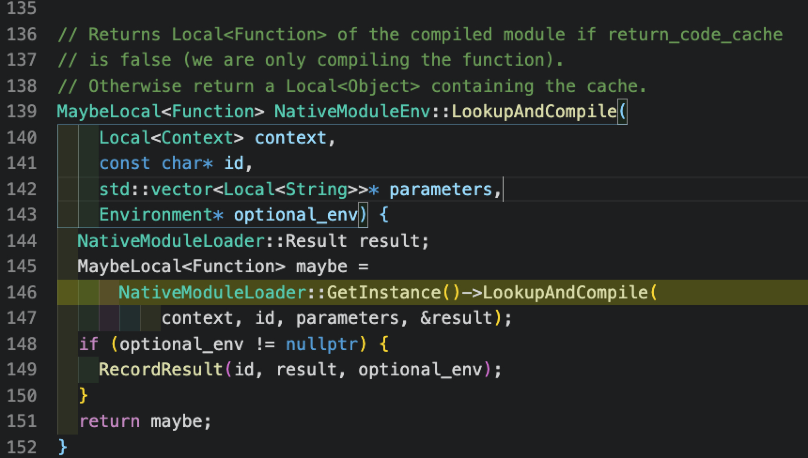
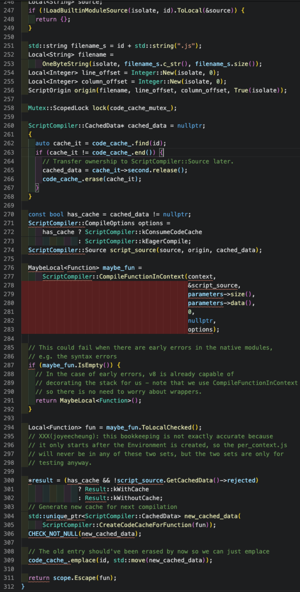
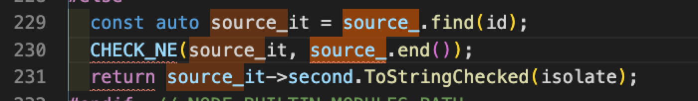
LoadBuiltinModuleSource 中根据 Id ，即路径名查询， source_ 中是提前嵌入的 lib 下的 Js 文件，如果命中则直接将对应的字符串赋值给 source，然后将文件的基本信息保存在 origin 中
利用 ScriptCompiler::CompileFunctionInContext 注入 Context，然后缓存到 codecache
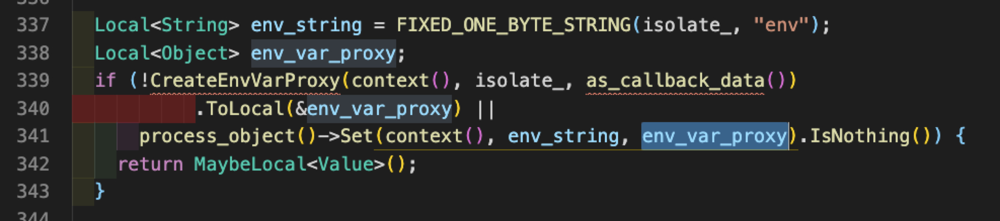
注入 process.env
至此 env->RunBootstrapping() 完成，CreateMainEnvironment 结束
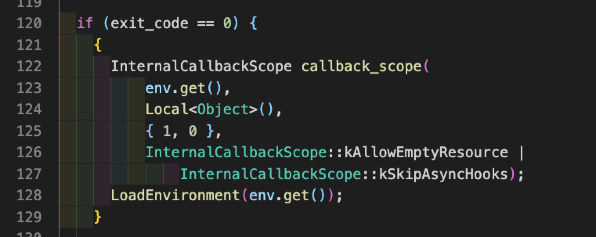

调用 LoadEnvironment 装载环境，根据不同的命令行参数运行不同的 JS文件，一般情况下，internal/main/run_main_module

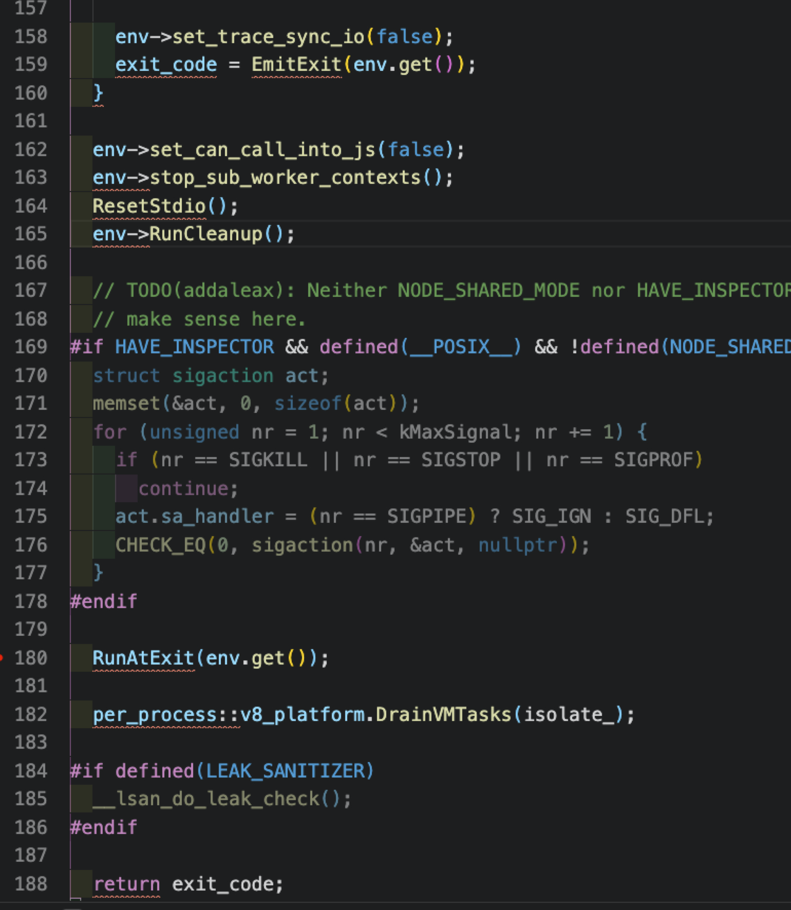
最后运行 uv_run ，启动 event loop，如果没有 active handle ，那么就准备释放资源和退出程序